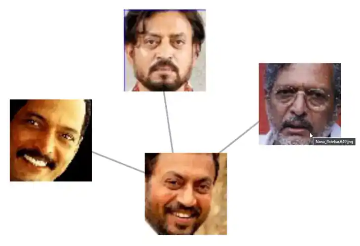
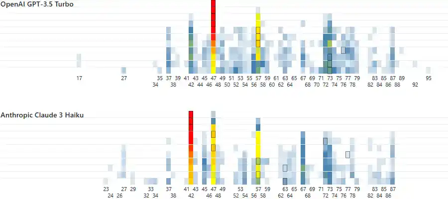
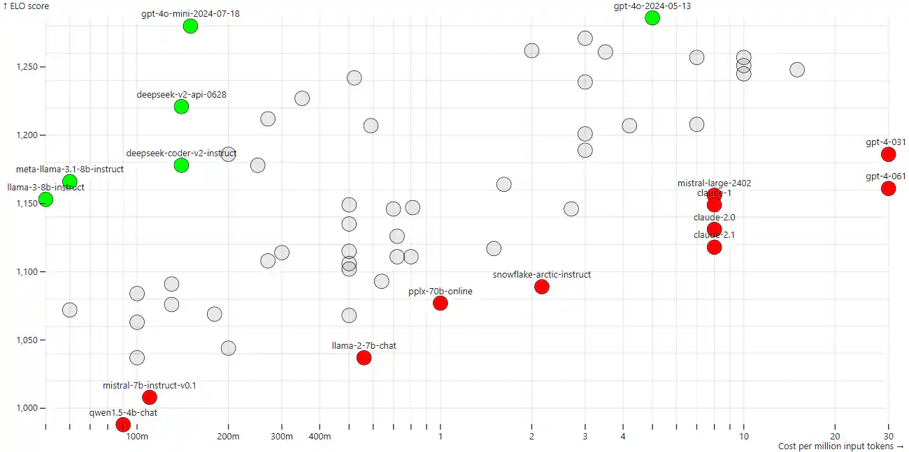
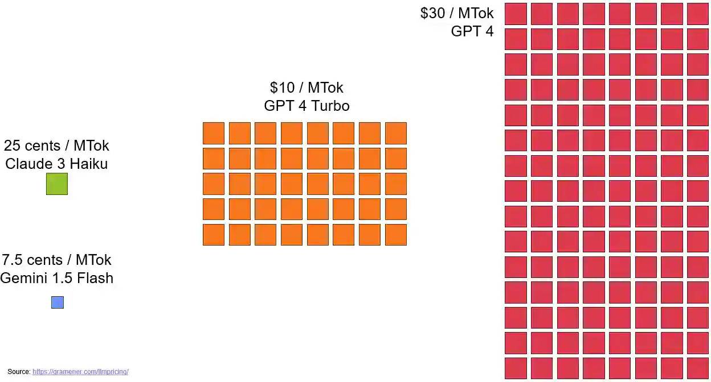
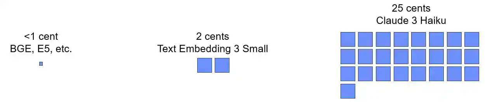
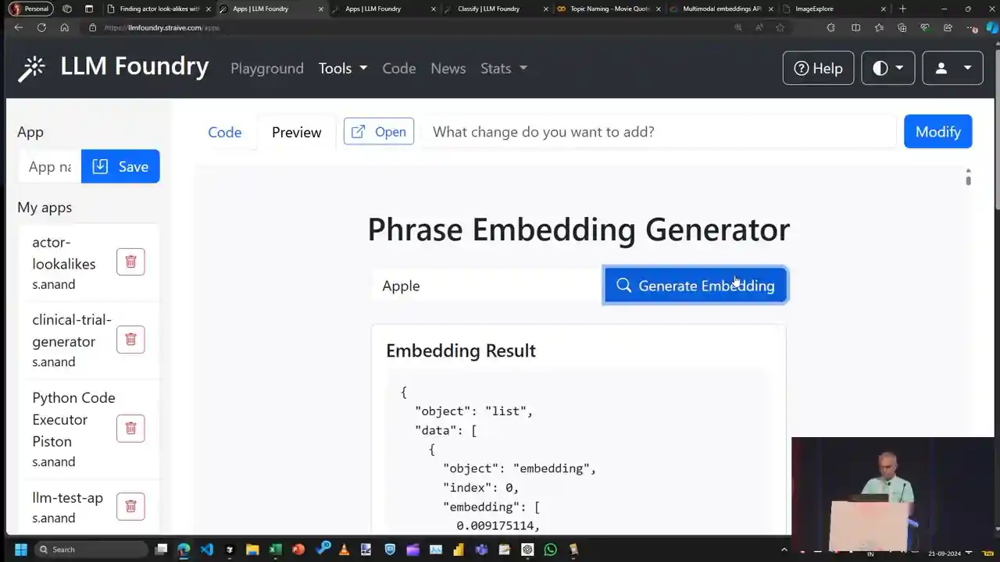
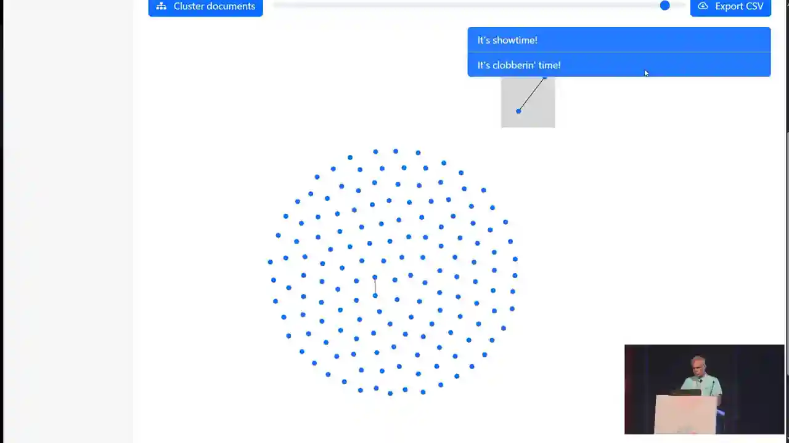
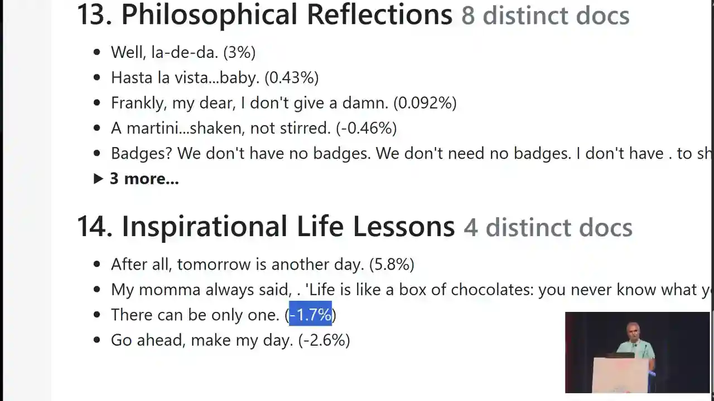
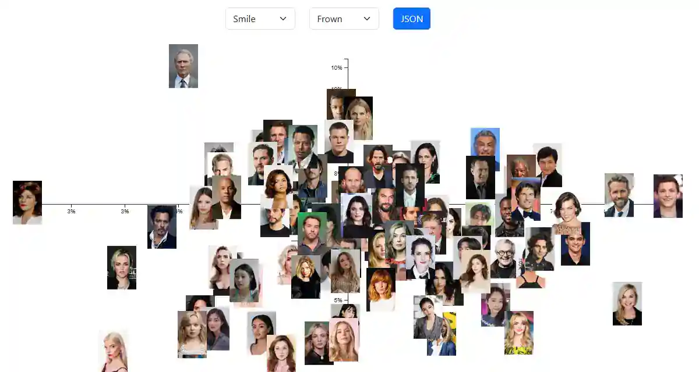

![Eight-panel comic. 1: a speaker on a 2021 conference stage points at a board asking ‘Who looks like Irrfan Khan?’, beside labels ‘too expensive’ and ‘too unreliable’ and photos of Shah Rukh Khan, Deepika Padukone, Ranveer Singh and Alia Bhatt. 2: a robot with a fake moustache guesses ‘random’ numbers 42, 47 and 37, with a chart and a note that 10, 20, 11, 22 and 100 are missing. 3: a price-versus-quality chart where newer models move up and to the left along a Pareto frontier. 4: the word ‘apple’ passes through an embedding model into a short vector, plotted near ‘orange’ and away from Apple the company. 5: movie quotes go through K-means into coloured clusters with outliers and an automatic taxonomy. 6: a face photo and the word ‘smile’ enter one multimodal embedding model and land in a shared space between ‘smile’ and ‘frown’. 7: driver application photos are accepted or rejected for plain background, duplicates, a company logo and a tuxedo; a six-week plan is crossed out for ‘Day 6’. 8: a ‘Bollywood look-alike finder’ pairs Shah Rukh Khan with Varun Dhawan, Deepika Padukone with Priyanka Chopra, Ranveer Singh with Vicky Kaushal, Alia Bhatt with Katrina Kaif and Irrfan Khan with Nana Patekar; an audience member asks ‘Why not spouses?’ and the speaker replies ‘I have no clue!’](comic-page.avif)
“Nana Patekar. Maybe.”
Twenty-six minutes into his PyCon talk, S Anand typed a name into a search box he'd been saving for the end. He'd opened by asking the hall whose double they wanted to find. The room voted for Shah Rukh Khan. Anand had said his own choice was Irrfan Khan, the actor who died in 2020: Who can replace—I mean, no one can, that's another story—but I mean, facially, who might be the closest?
Now the screen showed four small face crops joined by grey lines. Two were photos of Irrfan. A third carried the filename Nana_Patekar.649.jpg.


“But to answer the question that I had almost two years ago: who could replace Irrfan Khan? And I think one answer clearly matches: Nana Patekar. Maybe. Yeah, even as an actor, probably.”
S Anand · 26:22
The room laughed. The answer is fun, and it's the least important thing in the talk. What matters is what Anand didn't have to build to get it. He didn't collect a labelled face dataset or train a recognition network. He didn't hire anyone for computer vision. He took photos, passed them through a model someone else had trained, and asked which lists of numbers were close together.
A few years earlier the same question had been refused as a waste of money. To see what changed, rewind to minute three.
The screen shows which photo in that collection sat closest to an Irrfan photo, for that model, above that slider setting. It isn't a verified look-alike, a facial-recognition match or a claim about either man. Anand's “maybe” was the right word.
A quiz, a 42 and a veto
The talk began as a show of hands. Ranveer Singh: One, two hands, three.
Deepika Padukone did better. Then Shah Rukh Khan: Wow, he beats Deepika Padukone! I did not expect this.
Alia Bhatt came last. Anand wanted Irrfan, and said he'd first wondered about it around 2021.
The early language models weren't much help. Ask one for a random number and it isn't random. Claude 3 Haiku said 42 almost consistently every time
, and GPT-3.5 Turbo preferred 47. Both avoided round numbers and repeated digits, exactly the same kinds of biases that a human exhibits.
That was enough to make him distrust them for careful measurement. (The random-number experiment has its own story: “The computer said it gets stressed”, from his TEDx talk six weeks earlier.)


The second problem was money. His next slide priced an A100 GPU on AWS, Azure and Google at $3.40 to $4.10 an hour, about $2,500 a month on a hyperscaler. So he asked his co-founder, Naveen Gattu, for permission to play.
“Anand, we're in the middle of a fundraising initiative. $5,000, two months of your time to find out who's the actor closest to Irrfan Khan? Don't you think we have better things to do?”
The co-founder's reply, as Anand recalled it · 02:59
I said, ‘Okay, fine.’
It's a fair answer, and it's the setup for the whole talk. The question was cheap to ask but expensive to answer, and in 2021 an unreliable, costly model wasn't worth spending on a whim.
The frontier moves left
And I waited, and things have changed a little bit. Actually, two things have changed. First, we actually got acquired, which helps.
The second was price. Anand opened LLM Pricing, a chart his team maintained. It plots each model's cost per million input tokens (log scale) against its Elo score on the LMSYS Chatbot Arena, where people vote between two anonymous chatbots. The screen said “Last updated: 20 Sep 2024”, the day before the talk.


He dragged a slider through time. In August 2023 the frontier was GPT-3.5 and early Claude. Then the green dots kept jumping up and to the left. He explained the colour code in one sentence: I would never pick a model that is not in green. In other words, something that has nothing both above it and to the left of it.
He moved his teams each time the frontier moved, through Claude 3 Haiku, Llama 3 and Gemini 1.5 Flash, to GPT-4o mini, and then Gemini Flash moved the needle again, making it half the price of GPT-4o Mini. Crazy.
At 05:46 Anand says Claude 3.5 Haiku
. The automatic captions hear the same thing, but the tooltip on screen reads claude-3-haiku-20240307, at $0.25 per million tokens. Claude 3.5 Haiku was announced on 22 October 2024, a month after the talk. He meant Claude 3 Haiku, the model his own price slide names.


The ratio, not the dollar figure, is the point. $30 against 7.5 cents is a factor of 400, about the gap between $10,000 and $4 million. A project that needs a board meeting at one end of the chart is pocket money at the other. I had no problem going back to Naveen and saying, ‘Yaar, this I can fund out of my own pocket.’
All prices on this page are the September 2024 list prices shown in the talk. They have changed since, and Elo is one crowd's rating, not a universal measure of quality.
Cheaper than talking
Then came the turn Anand actually cared about. Generating text wasn't the cheap part. Embeddings were. An embedding model doesn't write anything. It turns a piece of text into a fixed list of numbers, and two numbers that are close to each other are similar in meaning.


He called them practically free
, and he valued something else even more: they're quantitative. The same text mostly gives the same numbers, so a distance computed today can be recomputed tomorrow. He was candid about the word “mostly”.
“Heck, I teach a course at IIT Madras, I set an exam paper assuming that it would always come back with the same response, and I found that roughly in about 2% of the cases it does not, and therefore I had to give the students full marks for getting the wrong answer.”
S Anand · 07:48
So experiments are mostly reproducible unless somebody changes the model behind the scenes.
Is the distance accurate? Interpretable? That's a second-order question.
Hold on to that sentence. The last question of the day comes back to it.
For the explorers below, this page re-embedded the talk's 150 movie quotes with the same model on 16 October 2026. The nearest pairs and loneliest quotes match what the stage app showed in 2024. That's evidence the method is repeatable. It doesn't prove the numbers are identical: providers retire models, preprocessing changes and caches hide drift, which is why Anand's 2% surprised him.
Apple, in 1,536 numbers
To show what an embedding looks like, Anand didn't open a notebook. He pasted a prompt into a code-generating chat app and let Claude 3.5 Sonnet write the tool.
Create a pretty vanilla JS single page web app using only CDN libraries. Show a form with a textbox for PHRASE. On submit, fetch this CORS-enabled API and show the JSON response as a pre-formatted 2-space indented JSON. Use this code:
curl -X POST [internal LLM Foundry proxy]/openai/v1/embeddings -H "Content-Type: application/json" -d '{"model": "text-embedding-3-small", "input": "$PHRASE"}'
Verbatim from the published slide prompt, except the endpoint: it pointed at Straive's internal LLM Foundry gateway, which isn't a public API.
He typed apple
and clicked the button. Out came a whole bunch of numbers. Lots and lots and lots of numbers, about 1,530 odd in this particular case.
The model, text-embedding-3-small, returns 1,536 by default. And these numbers are what constitute the meaning of this—of this phrase, ‘apple’.


Picture each list as a point in a space with 1,536 directions. “Apple” and “orange” land near each other. To measure how near, Anand named the usual tool: you probably calculate it as a cosine similarity
, the cosine of the angle between the two arrows. Pointing the same way gives 1; unrelated gives about 0.
He took a short detour that's now a familiar refrain. Me, I have moved entirely towards LLM-based coding.
The deck itself was a reveal.js page generated from a prompt that's in the repository. Beyond that, the only thing that I did was the last 15 minutes of ‘Oh, maybe we should do this, maybe we should do that.’ That is purely obsessive-compulsive disorder.
“It's showtime!” meets “It's clobberin' time!”
Next came about 150 lines from a public list of movie catchphrases, from Beetlejuice, Beetlejuice, Beetlejuice!
to Bond, James Bond.
He pasted them into a clustering app, clicked Cluster and slid the similarity cutoff up until only the closest pairs stayed joined.
Top of the list: ‘It's showtime!’ and ‘It's clobbering time!’ Yeah, very similar, absolutely. These two: ‘They're here!’ and ‘They're back!’ Okay, that's also fairly similar, fair enough.
At the other end were quotes with no close neighbour at all. ‘Machete don't text’ and ‘There can be only one.’ These are practically outliers.
His summary had two numbered lines: outlier detection now becomes a whole lot easier; cluster detection becomes a whole lot easier.
Look at why those pairs match. “Showtime” is Beetlejuice; “clobberin' time” is The Thing from Fantastic Four. They share a rhythm, “It's ___ time!”, not a meaning. Proximity is useful, not comprehension. Try it yourself.
Pick a quote. See what the model puts next to it.
These are the talk's 150 catchphrases, embedded with the same model it used (text-embedding-3-small, 1,536 numbers each) on 16 October 2026. Every similarity below is a real cosine computed from those full vectors. The map is only a flat sketch: 1,536 dimensions squashed into two, so trust the numbers, not the distance on the map.
Data: movie-quotes-catchphrases.csv from the 2024 repository, catchphrase column only. The map is a t-SNE projection of the vectors. Cosines are stored to ±0.002. The 2024 stage numbers weren't published, so the values here are a 2026 recomputation, not the original run.


Name it, then overrule it
Then Anand asked the question that turns a toy into a tool. If we can do cluster detection, then maybe we can get a sense of what are the different types of movie quotes in this list of movie quotes without actually having to sit and read and classify all of these, right?
He asked for 15 topics. The app grouped the vectors with bisecting K-means (Why bisecting K-means? I don't know, I just read that it was slightly better
), then sent five samples from each group to GPT-4o mini with a short prompt: Suggest 2-4 word topic names for each cluster. Capture the spirit of each cluster.
Out came Philosophical Reflections, Legendary Heroic Phrases, Classic Film References, Inspirational Life Lessons and others. He admitted the number was a choice: I could have chosen maybe 16 clusters, 14 clusters, however many clusters—it's entirely arbitrary.
Not every name fit. Inspirational Life Lessons held Forrest Gump's box of chocolates next to ‘There can be only one,’ that's probably not inspirational.
He changed the prompt to ask for Hindi names and got them. In other words, the prompting part of it is all yours.


The next step is the one that matters most. He deleted the generic topics, I want only specific stuff
, kept the rest as his taxonomy, and asked the app to file every quote under it. Beetlejuice's triple summons scored 37% for Creepy Movie Moments. ‘It's showtime!’ very strongly falls under High-energy Showdowns.
No retraining was needed and nothing was re-embedded: the topics are just more vectors, and classification is one matrix multiplication.
“In case you're not familiar with what a dot product is, just think of it as one function which is surprisingly fast even without a GPU.”
S Anand · 18:25
- Encode onceEach quote becomes 1,536 numbers. Paid for once, cached.
- CompareDot products between every pair: neighbours and outliers.
- GroupK-means proposes clusters. The number of groups is your choice.
- LabelAn LLM reads samples and suggests names. This is the only generative step.
- EditA person deletes, merges and renames. The taxonomy is now yours.
- ClassifyTopic vectors × quote vectors. One matrix product.
Let the data propose groups. Then impose your own.
Same 150 quotes, same 2026 vectors. Propose replays the talk's bisecting K-means, computed in advance for every group count from 4 to 15 and five random seeds. Impose files each quote under whichever of your chosen topic names is nearest, using dot products computed live in your browser.
The vectors are unit length (every norm is 1.000 ± 0.001), so each dot product here equals the cosine similarity. A “close call” means the top two topics are within 0.01 of each other. K-means used scikit-learn's BisectingKMeans with k-means++ initialisation, as in the talk's notebook. On stage, the deleted topics were the generic ones, Iconic Movie Quotes and Memorable Catchphrases, and they start switched off here.
Two lessons fall out of the explorer, and neither came up in the talk. First, the groups are not stable. With 14 groups, the adjusted Rand index between seed 1 and the other four seeds is only 0.17 to 0.26, where 1 would mean identical groupings. K-means is a way to draft a taxonomy, not to discover one. Second, the filing reflects the names as much as the quotes. With the stage's twelve specific topics, Witty Comebacks takes about a third of the 150 quotes, Philosophical Reflections gets none, and about 35 quotes are close calls. A good taxonomy is a human decision, and so is the check that it works. The vectors only make it cheap to apply.
On stage Anand said the dot product would give you the distance
. Strictly, it gives a similarity: bigger means closer. It equals the cosine only when the vectors have length 1, which OpenAI's do. For vectors of other lengths, normalise first, or a long vector will look similar to everything.
Words and photos in the same room
But the best part of it is we can apply this to images as well.
Anand used Google's multimodal embeddings API on Vertex AI, and he was honest about why: this happened to be the first one that I found and it worked well enough, so I've never really dug deeper into this.
Send it a sentence, a photo or a video clip and you get back a vector. The point is where the vectors land.
“…it embeds them all in the same space, which means that the distance between the photo of an apple and the picture of an apple is actually very low.”
S Anand · 19:59
are in the same semantic space with the same dimensionality. A text vector from OpenAI and an image vector from Google don't share axes, so comparing them means nothing.
His prototype, ImageExplore, plotted about a hundred actors' photos against two words at once. Similarity to “smile” ran along the x-axis and similarity to “frown” along the y-axis. He introduced them as Bollywood actors, but the faces on screen were Hollywood stars. So what this is saying is this picture of Tom Holland is the closest to a smiling picture; Tom Holland's smiling the most.
At the other extreme: Clint Eastwood is totally frowning. Yeah, we get that.


At 21:27 Anand swapped the words for “African” and “Chinese” and read off which faces scored highest. It shows how easily a shared space will score a face against any word. It doesn't show anyone's ancestry, ethnicity or nationality. A score like that mixes skin tone, lighting, makeup, photo style and whatever stereotypes the training captions carried, and NIST's 2019 study found demographic differences in error rates across many face-recognition systems. That's why there's no word-against-face slider on this page.
Six months, six weeks, six days
Then the story turned from celebrities to payroll. A logistics client screened photos from drivers applying to join its fleet. Some were duplicates. Sometimes they don't send their photos—in fact, a whole bunch of people send the logo of our company as their photo. Sometimes they're wearing tuxedos, not a driver's uniform.
They wanted no high-visibility vests and a plain background.
Anand's team did what any team would do: We will do training, we will do computer vision, blah, blah, blah,
and budgeted about six months. The client wanted a six-week pilot. We looked at our hands and said, ‘Okay, maybe we can try with LLMs.’
“The sixth day, the project was done. All we did was this: took the embeddings, and we found that if we take the word, let's say, ‘high-visibility vest,’ it has a good match. ‘Plain background,’ it has a good match.”
S Anand · 22:50
The rest of the anecdote is a comedy of early delivery. Nobody knew what to do with the remaining five weeks, so the client asked for enhancements. We literally had to tell them, ‘Boss, these are once-in-a-lifetime occasions when the project actually gets done before the budgeted time. Let the team have a holiday.’
Then came the line that is the real thesis of the talk:
“I don't think the world has gotten used to the scenario where we don't have to train models anymore to get to the result that we want. The pre-training and some amount of prompt engineering works well enough.”
S Anand · 23:16
Notice what the trick is. Nobody trained a vest detector. They wrote the requirement down as words and measured each photo against it. Changing a rule means typing a new phrase, not labelling a new dataset.
This is the speaker's account of a client pilot. The talk gives no dataset size, error rates, thresholds or comparison against a trained model, and doesn't say whether duplicate detection worked or what went to production. A responsible version would hold out labelled photos, set each threshold on a validation set, report false accepts and false rejects for every check, and route uncertain photos to a person. It would also need applicants' consent and a check for demographic differences in error. A photo-requirements checker isn't an identity checker, and a cosine is not proof of who someone is.
The audition
Finally, the question the room had voted on. ImageExplore compares every photo of a set of Bollywood actors with every other one. A slider sets the minimum similarity. Raise it, and only the closest photos stay joined. Search for a name and you see who stays linked to it.
Before the stars, Anand showed what the slider does at its extremes. The three most similar photos in the whole set were two photos of Riteish Deshmukh and one photo of Shreyas Talpade.
The three loneliest were Manoj Bajpayee, Tusshar Kapoor and Kunal Khemu: Very atypical Bollywood faces.
Pick a casting call. See the stage result, and what it can't tell you.
Each panel is a frame from the recording, cropped to the result. There are no scores here that weren't on the screen. ImageExplore's data and code weren't published, so this page can't rerun them.
Anand treated it as a game, and said so. So now as a casting director, I have at least one backup.
But look at what kind of answer the tool gives. Every result is photo to photo. Deepika Padukone's nearest neighbour was another photo of herself. Ranveer Singh and Vicky Kaushal share similar beard, similar look
, which is a fact about two pictures. In a different pair of photos, the beards and the result might not match.
“I have no clue”
Anand closed with three adjectives, cheap, quantitative and multimodal (26:50), and the applause came. Then the session host, who had seen him at PyCon over the years
, asked the best question of the afternoon.
“…using an image embedding model for this that also embeds text, so it's the same model—so I'm curious why it wouldn't rank spouses in similarity as well? Like, why is it just visual?”
The session host · 27:30
The question goes deeper than it sounds. A model that learned from captioned photos might place a star near their partner, not because the faces match but because the two names keep appearing together. Then “similar” would partly measure fame and association, not just appearance. Anand didn't bluff.
“I can give you a long answer to that, but I'll give you a summary of the answer. I have no clue. I have no idea how they're trained. I haven't even explored what similarities work and don't work. Great question.”
S Anand · 28:13
That's the real ending of the talk. After half an hour on how easy similarity is to compute, the speaker admits he doesn't know what property the number measures. A cosine is a measurement. Like any measurement, it needs a test of what it actually measures. Anand sketched that test himself, using Deepika Padukone and Ranveer Singh, who are married: Two people looking image-wise roughly equally similar, but one pair is husband and wife and another pair is not—are they going to come closer together? If so, how much closer? Worth exploring.
A test that could prove the look-alike finder wrong
Run this before trusting “nearest” as “looks alike”. Decide in advance what result would count against the method.
| Group | Example design | What it controls |
|---|---|---|
| A · Couples | Real spouses whom independent raters judge not to look alike | Association without resemblance |
| B · Strangers | Unrelated people matched to group A on rated dissimilarity | The baseline |
| C · Look-alikes | Pairs that independent raters do judge alike | Proves the tool can see resemblance at all |
- Several photos per person, from different years, poses and lighting. Report how much the ranking changes between photos.
- Blind human ratings for every pair, collected before any model is run.
- Same crop, same model, same settings for everyone. Then repeat with a second, independently trained image model.
- Unknown faces as a control: consenting volunteers whose names can't be in any training data.
Cheap, quantitative, multimodal. And conditional.
“But the message that I wanted to leave you with is primarily that embeddings are really cheap. They are quantitative and therefore reproducible, perhaps even reliable, and they are multimodal. Just use them a bit more.”
S Anand · 26:50
Notice the hedge: perhaps even reliable
. “Cheap” was true at September 2024 prices. “Quantitative” held up: two years later the same model still puts his quote neighbours next to each other. “Multimodal” worked on stage. What the talk shows is narrower and more useful than “no more training”. A pretrained model's vectors are a cheap first baseline, good enough to try an idea in an afternoon. Whether they're good enough to decide anything is a separate, measurable question.
Two last audience questions showed how that afternoon worked. LLM Foundry, the app behind half the demos, is Straive's internal gateway: Because it's an internal router, you don't get access to it by default.
And the charts? All the visualizations are from some LLM where I just said, ‘Do this, this is what I want,’ and it generated it.
The code got cheap too. That's how one person could build the demos, the slides and the look-alike search himself.
So the Irrfan answer stands, in its narrow form: in one 2024 photo collection, under one Google model and one slider setting, a Nana Patekar photo sat close to an Irrfan Khan photo. Whether that's resemblance or something the model learned about two famous character actors is the next experiment. Anand said it best: Worth exploring.